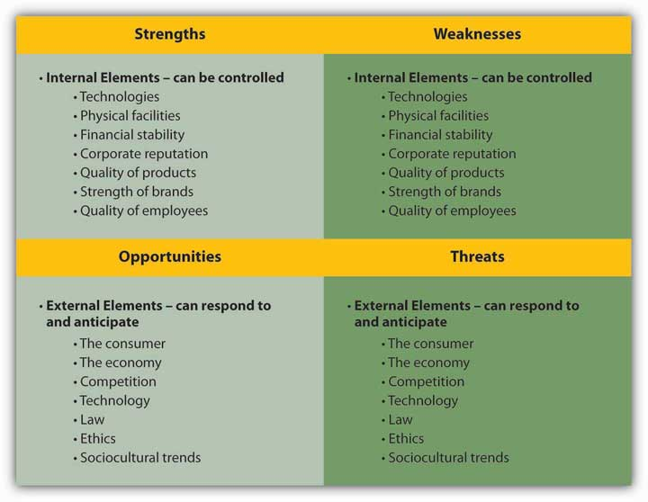
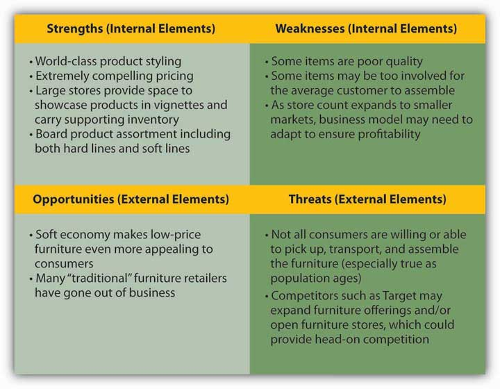

After studying this section, students should be able to do the following:
Now that we understand the value of brands, it is time to get down to the business of strategy creation. Plan now, or regret it later! Here’s what an advertising strategist needs to do:
Fundamentally, our goal is to take a thorough internal look at our product, service, and firm. We must be objective. This is hard. Catherine joined msnbc.com and immediately began to understand the product itself and the brand. She must summarize where the current offering is positioned, identify where she wants it to be positioned, and then create an overall strategy to connect those dots. Getting this part right makes the rest of the challenge (and this book) easy. Getting it wrong…
Catherine Captain
(click to see video)Catherine Captain discusses her arrival at msnbc.com and the importance of establishing the brand in the consumer’s eyes.
Before you can decide where to go, you need to understand where you are (the current marketing situation or environment). Use secondary and primary research as discussed in Chapter 7 "Decide What You Can Afford to Say: msnbc.com Sets the Budget" to inform your assessment of the full situation. The situation analysisAn assessment of where the brand currently is, including the competitive situation, customer situation, and economic and cultural trends. is an important tool to help you with this process.
A situation analysis begins with a review of the client’s industry and of the competitors vying for the consumer’s attention and dollars. For example, a situation analysis might reveal that some companies in the industry may not actually be competitors; buyers of Hyundais are unlikely to be buyers of BMWs as well. It may also reveal indirect competition in an industry. Southwest Airlines, for example, tries to price its airline tickets low enough to compete with buses and automobiles.
msnbc.com understood its competitors to reach beyond just other online news sites such as CNN.com or NYTimes.com. Its competition also included news aggregators or portals such as Google News as well as broader and new information sources such as Digg and Gawker.
The situation analysis also evaluates the potential customers (prospects) for your product. This might include estimating the potential population of customers, demographic changes (such as aging Baby Boomers), potential sales per customer, trends in willingness to pay, and so on. Note that for consumer goods companies, the “customer” may be either the end consumer or the retailer. Thus, Wal-Mart is a major customer for consumer goods companies like Procter & Gamble.
As we learned in the section in Chapter 6 "Segment, Target, and Position Your Audience: SS+K Identifies the Most Valuable News Consumer" on segmenting the audience, msnbc.com started understanding its audience as a broader group of online news users. As the research progressed, it learned about msnbc.com lovers and news junkies—users who need more and more stimulation from what they read in order to be satisfied—ultimately leading to the definition of the News Explorer as the most valuable audience for the upcoming branding campaign.
Target identification: “What was it about explorers and addicts and junkies that sets them apart from the rest of us?”
In order to develop authentic, relevant communication with a target audience, you need to understand who they are. Think about trying to categorize the vast numbers and types of people who might prefer msnbc.com. Then overlay that image with all the different regular uses for the site—news, entertainment, research, passing time—and the task of defining a target consumer can seem mind-boggling. Demographics alone don’t sketch an adequate picture of the intended audience. As discussed in Chapter 6 "Segment, Target, and Position Your Audience: SS+K Identifies the Most Valuable News Consumer", instead of targeting a group bounded by readily identifiable markers such as socioeconomic class, age, or gender, SS+K wanted to discover how its audience might be unified by a mindset.
Finally, the situation analysis examines overall economic and environmental trends that may affect a company’s marketplace situation. Economic growth or recession affects total demand for a product. Fewer people buy expensive houses when companies are downsizing. Foreign exchange rates may change the costs or make the company more competitive in foreign markets because the dollar may be worth less in another country—as a result it costs more dollars to manufacture the product elsewhere. Changes in costs can affect both prices and profits. For example, a drop in technology costs might cause a company to lower the prices on the goods it produces, possibly reducing profits. By contrast, a rise in fuel costs might force a company like Delta Airlines to raise its prices; if the company can’t increase prices enough to make up for the additional costs, its profits will decline. Changes in the cultural environment also exert a huge impact on a company’s fortunes. For a news Web site like msnbc.com, for example, the number and types of people who visit the site is influenced by the penetration of Internet access in different areas, the lure of alternative online platforms like virtual worlds or even Twitter, and the number of people who begin to use their cell phones as their primary “screen.”
Michelle Rowley
(click to see video)Michelle Rowley discusses the competitive and consumer situation faced by msnbc.com.
A brand auditAssessment that examines the health of a brand and identifies areas of additional value and ways to improve brand equity. helps a company understand the health of its brand, identify areas of additional value, and improve brand equity. A firm should conduct brand audits regularly—at least yearly—to ensure that the brand stays relevant, unique, and strong.
The story of Nortel, a telecommunications equipment maker, offers an example of the importance of a regular brand audit. Nortel was struggling during an industry downturn and an accounting scandal. Its chief competitor, Cisco Systems, had an advertising budget almost six times the size of Nortel’s. Nortel’s new chief marketing officer, Lauren Flaherty, decided it was time to undertake a global brand audit to get a feel for how customers, employees, and shareholders perceived Nortel and what the company needed to do to reshape its brand.
Before the audit, Flaherty met with marketing executives throughout the company to assess Nortel’s marketing communications capabilities, as well as the capabilities of its ad agency and public relations firm. “The first priority is to understand, by target audience, what is the communications challenge with each constituency,” she said. “We will create a very systematic blueprint for who we communicate with, how we communicate, and the whole marketing mix.”Kate Maddox, “Nortel CMO Begins Global Brand” B to B, May 8, 2006, 3. Nortel’s audit allowed the company to get a more realistic feel for its market position so that its advertising could more precisely communicate its value proposition.
msnbc.com’s brand audit highlights:
On the surface, the marriage of Microsoft’s technology with NBC’s content looked like a happy one, but beneath the surface there was confusion. Many of msnbc.com’s people defined the brand based on their role at the organization. As discussed in the Chapter 5 "Know Your Audience: SS+K Learns All About msnbc.com, Inside and Out" section on research and the msnbc.com stakeholder interviews, the technology side of the organization (the people who make the site function) identified more heavily with Microsoft, while employees who worked on the news side identified more with the NBC brand. By defining the brand based on their roles at msnbc.com, they lacked a cohesive umbrella definition, and as a result the organization wasn’t yet able to articulate its meaning to the outside world. Additional points contributed to the lack of clarity:
SS+K conducted a situation analysis for its client, msnbc.com. It was vital for the agency to understand how people thought about the news service—especially compared to its major competitors. What products did it deliver well? What kind of personality did it have? The documents below reflect some of the agency’s findings.
Identifying a competitive opportunity. The picture was a bit muddy: although the marriage between Microsoft and NBC made the news service unique, there was confusion about the best way to tell the client’s story to consumers. Was the site about cutting-edge technology or unique content? Should it focus on breaking news or on in-depth feature stories?
Further probing with consumer focus groups, however, revealed an opening. When asked to compare the client’s personality to other news Web sites, people described msnbc.com as more friendly, colorful, and younger—if the site came to life, they thought it would be the characteristics that popular news anchor Katie Couric represented. This was a more positive personality description than the groups gave for the serious demeanor of CNN.com (who would have characteristics of an Englishman) or of the nondescript Yahoo! + Google News (whose traits would be like a traffic cop!). As a result, msnbc.com saw an opportunity to position itself as entertaining news.
Further probing revealed that people regarded msnbc.com as less biased than other news sites—either to the left (CNN.com) or to the right (Fox News). Compared to CNN.com, people felt that msnbc.com offered more variety, emotion, and potential to discover interesting things. In other words, the competition provided plenty of information, but not content that excited the imagination. At last, here was an advantage SS+K could run with: let’s think of the core customer as a News Explorer who enjoys the experience of discovering and unearthing new pieces of news and information from what he or she reads.
Agencies typically synthesize the results of situation analyses and brand audits into a SWOT analysisAssessment that organizes internal and external factors affecting the product or business into separate categories (Strengths, Weaknesses, Opportunities, and Threats) for study., which organizes internal and external factors affecting the product or business into separate categories for study. A SWOT analysis gives a company a quick overview of its competitive situation and helps it decide which actions to take that will address trends in the environment in ways that are consistent with its capabilities.
This refers to strengths and weaknesses inherent to the product or business itself. A financial firm’s strengthsInternal factors (attributes of a product or brand itself) that the company can build on. might include a stable financial position or its strength or expertise at operating overseas. WeaknessesInternal factors (attributes of a product or brand itself) that are detrimental to a product or brand. could include bureaucratic inertia or slowness to develop new products.
In contrast, opportunitiesExternal factors (conditions outside of a product or brand itself) that can be used to build or promote the brand or product. and threatsExternal factors (conditions outside of a product or brand itself) that challenge the ability to build or promote the brand or product. describe factors that lie outside the product or business. For example, aging Baby Boomers could be an opportunity to the makers of Tempur-Pedic mattresses that promise a more comfortable night’s sleep. For a bicycle firm like Schwinn, on the other hand, aging Boomers might be a threat, since people are likely to bicycle less as they grow older.
Figure 8.3 Step 3: SWOT Analysis
A SWOT analysis identifies internal elements (strengths and weaknesses) and external elements (opportunities and threats).
Figure 8.4 Example of a SWOT analysis for Ikea
Michelle Rowley
(click to see video)Michelle Rowley discusses an external factor that affects msnbc.com—would you define it as a threat or an opportunity?
Know where you are before you decide where you’re going. Conduct an honest SWOT analysis to identify good and bad aspects of your situation.